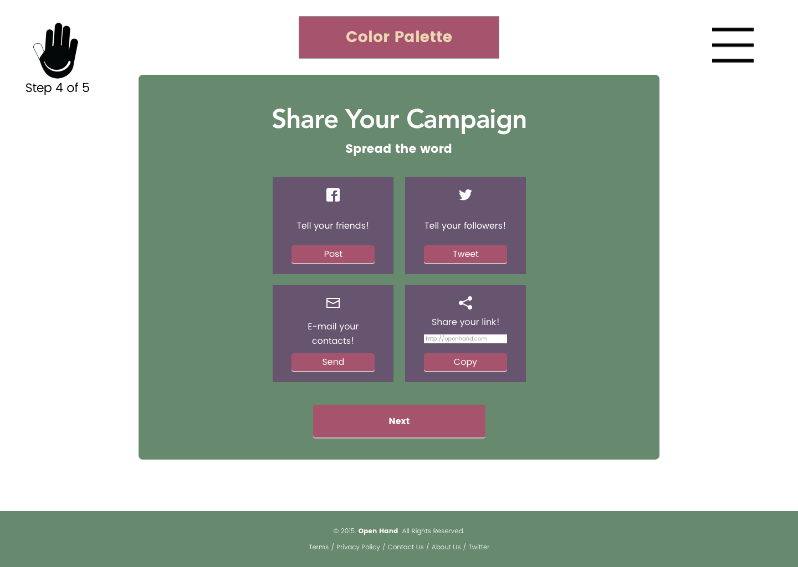
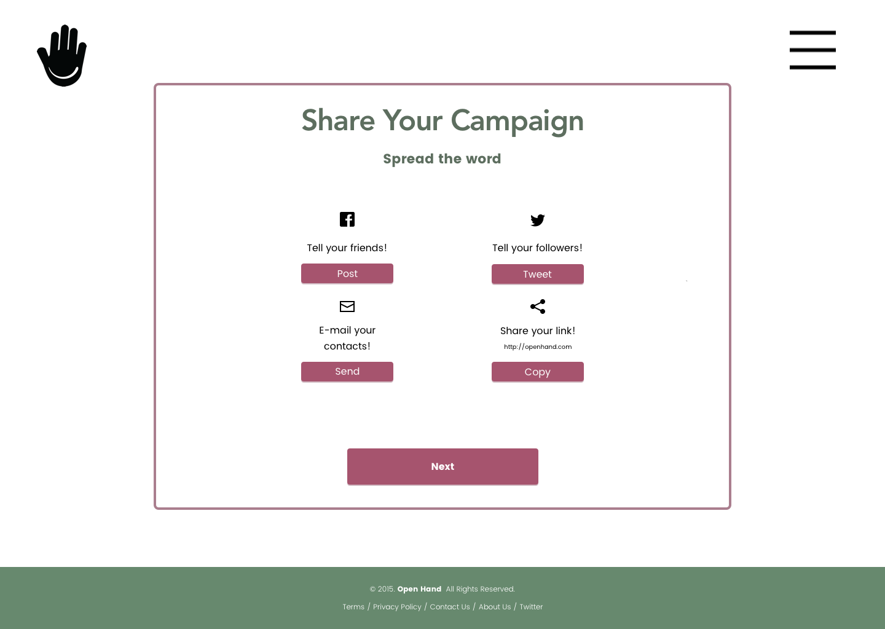
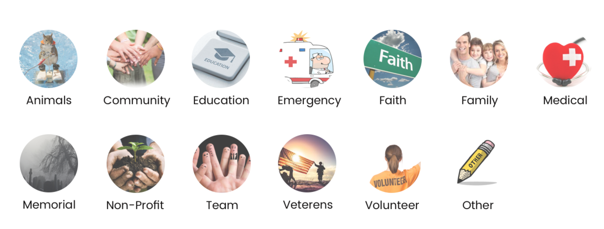
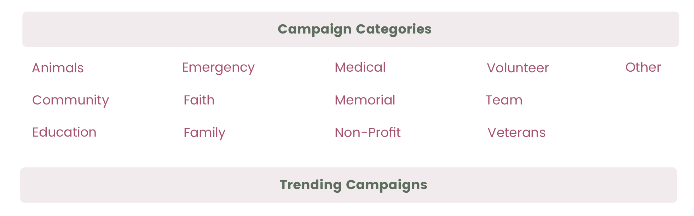
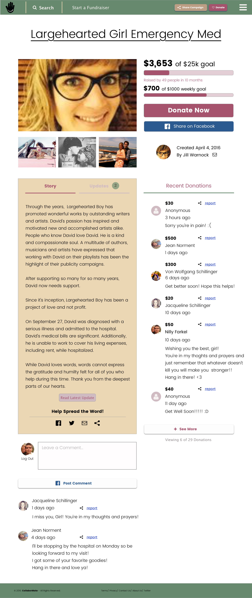
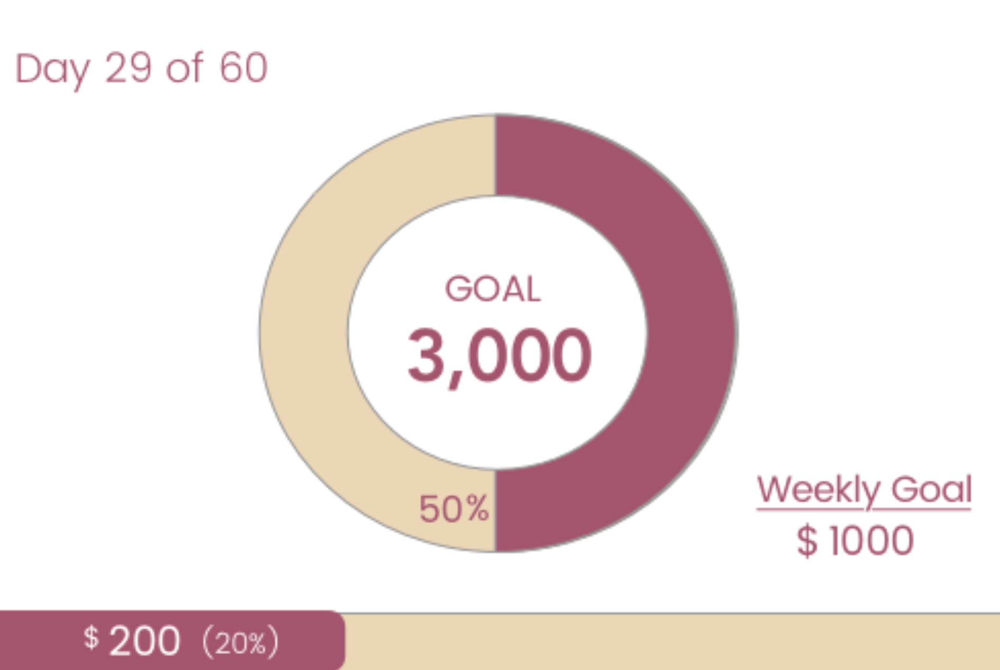
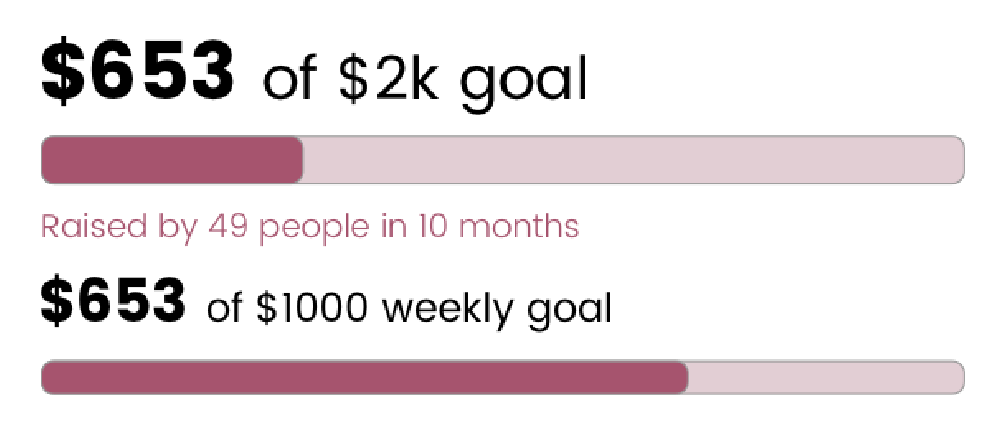
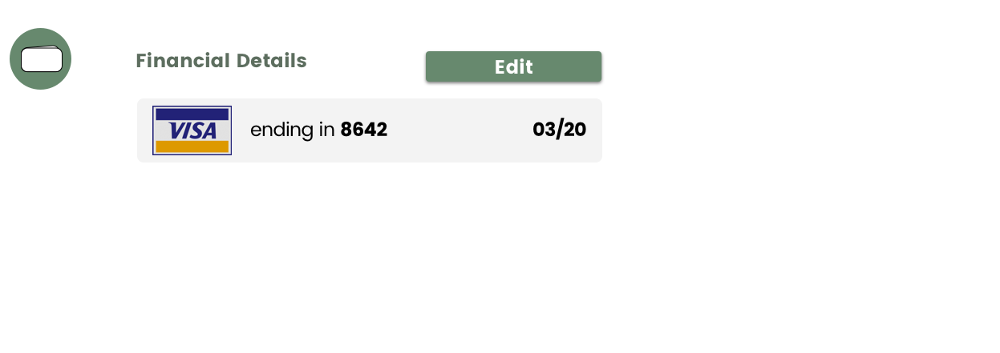
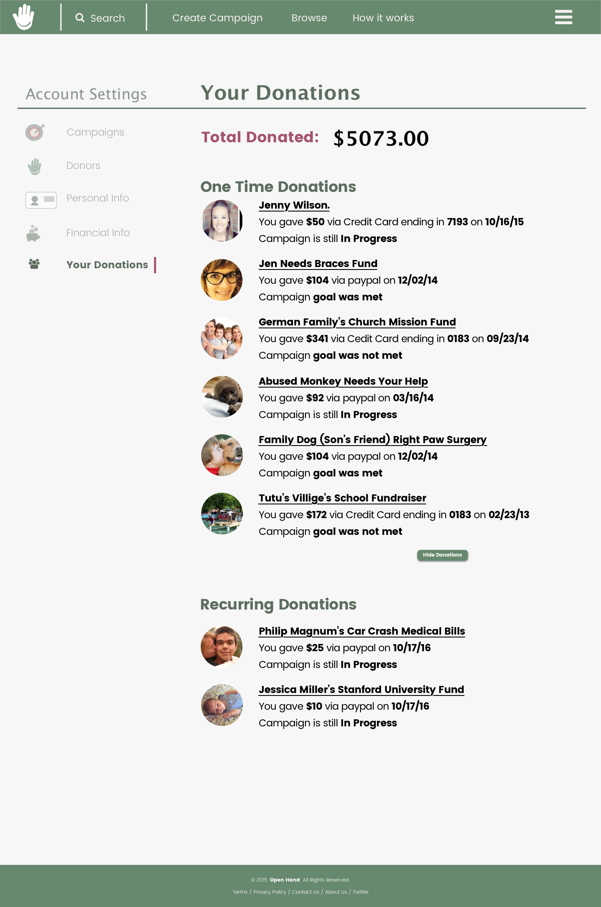

Open Hand was an opportunity for me and my design team to explore branding and designing a crowdfunding website. I worked around the central idea of how comfortable a user feels giving through a website.
The problem isn’t giving. The problem is the medium of giving. Most people have the desire to help others but they are held back by their experiences with sites that do not appear trustworthy and are difficult to navigate. I set out to create a crowdfunding site that users could trust and use with ease.
My solution consisted of designing a website that users could trust. Through user surveys I was able to discover that elderly people seemed to be the most eligible to give, but the biggest hindrance to their generosity was a lack of trust for the website they were using. On the other side of the spectrum, a sizable portion of users consisted of younger people who couldn’t give large sums of money but wanted a solution whereby they could give small amounts of money on a regular basis. So our website needed to be agile enough to accommodate the younger and older generations.
I was less interested in promoting consumerism and more interested in connecting people. Many elderly people are very generous but limited in their options because of their fear of the internet. I set out to see if I could solve this issue.
The first thing I did was create surveys to identify areas in which I could improve trustability. I discovered that it is valuable to have detailed profile pages that include photos, bios, and donations from others. It’s also important to have reviews, endorsements, and financial records readily available.
From there I completed SWOT analyses of the site's competitors to help determine the direction of my design and how competitors approached these problems. GoFundMe, the main competitor, used a simple interface with a profile section to build trust, so I knew I needed something similar.
My designs went through many iterations, using expert feedback and the competitors' positioning to design a practical, easy layout that would be perceived as credible.
I originally wanted to apply happy, bright colors to the website to provide a more jubilant tone. User feedback, however, quickly nixed my first color palette and led to a more conservative selection. With the site’s logo, I wanted something that would easily convey a sense of giving. Naturally, I chose a hand to be the centerpiece.
User Feedback: Too Much Color
Revision
Originally, I had multiple icons representing the various categories that users could browse on the home page. These icons were bulky and distracting as revealed by feedback. So I removed them and simplified the area by listing the category's names. The resulting effect achieved higher simplicity.
User Feedback: Too Busy
Revision
The initial profile page lacked any ability to monitor comments which I realized quickly would be very important if users were to perceive the site as credible. I redesigned to give users the ability to report inappropriate comments and the page owner the ability to delete comments.
Profile Page
I was also worried about our charts being overly complicated by my colors and layout, so I decided to simplify the design to make it easier for the user to process the information.
User Feedback of Progress Meter: Over Complicated
Revision
To build trust, I incorporated a few different features. For the financial aspect I provided an intuitive way to link banking information with confirmation screens and indicators that would allow users to know things were working as they should.
Saving User Finance Info into a Less Visible Container Heightened User Comfortability
Once logged in users could also view a history of their given donations for tax records or personal peace of mind. Furthermore, because this area would be the primary place for users to look at their donations history, the page needed to be clear and concise. If there was a space to strengthen or kill trust, it would be this page. Therefore, it was crucial to get this page right in terms of UI, especially informational hierarchy.
To keep this page clean, I relied upon font wieghts and underlines to communicate heirarchy.
What worked? I created a website that had the all necessary information in order to donate on a singular or recurring basis. Our profile page provided a friendly environment for users to become acquainted with someone in need. Also our browsing navigation was intuitive.
What didn't work? Branding wasn’t too strong because more people ended up associating my hand logo with a signal to stop. Also the scroll-down, form like donation page was offsetting to some, coming across as too laborious to finish.
What were my doubts going into the project? I wasn’t sure how to balance a platform that would appeal to both the young and elderly in the target audience.
Any surprises? I was most surprised when looking back on the project to see how much time I could have saved if I had committed more time to research in the initial stages. The most streamlined part of the project came when I opened my blinders and listened to what users were saying and how other sites solved similar issues, which can be most readily seen in my profile page and browse page.
What would you have done differently if given more time? I would have definitely conducted more research not only through user surveys but also through analyzing the competition. I spent altogether too much time working in isolation and should have embraced the flux of user opinion and tried methods. I also would have kept more project artifacts to document the project’s evolution -too many artifacts were saved over.
Learning Lessons: Since this project required more information to be displayed at once, it refined my understanding of information hierarchy, which began to show itself most acutely in the last two parts of the project I developed -the browse flow and profile page. I learned how to guide a user’s attention through areas and subareas that held components of components.